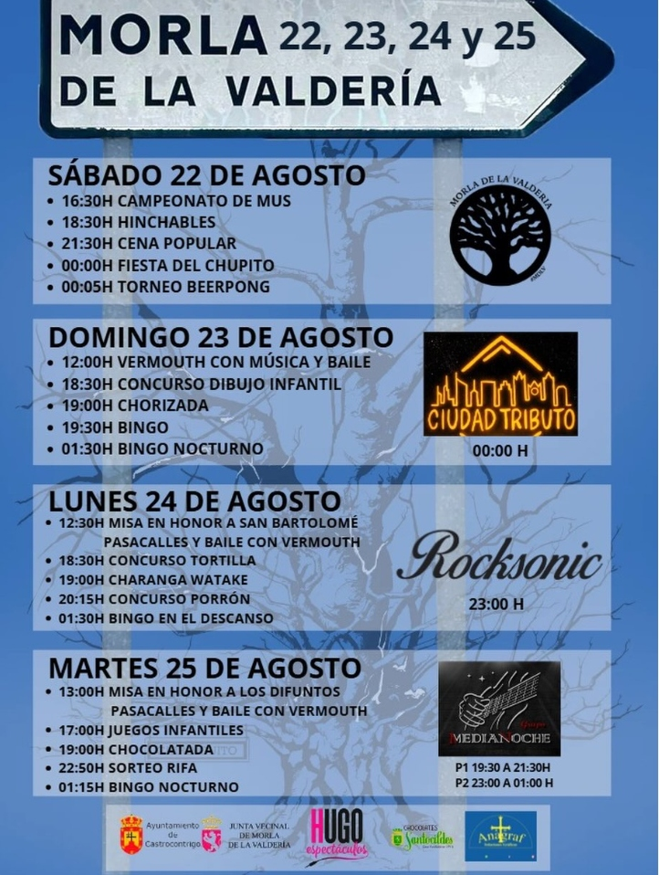
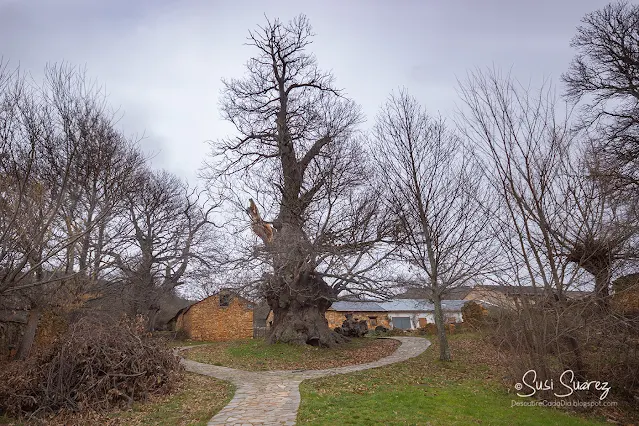

24 de Agosto
Las Fiestas de San Bartolo: Tradición y Reencuentro
Descubre el programa completo de las fiestas grandes de Morla, donde la música, las verbenas y la tradición unen a todos los vecinos en los días más calurosos del verano.
Leer artículo
Turismo y Naturaleza
Descubriendo la Ruta de los Castaños Utópicos
Un paseo imprescindible por la geografía valderiense. Acompáñanos a recorrer el sendero histórico hacia la sierra, descubriendo castaños centenarios de formas imposibles.
Leer artículo
15 de Mayo
Celebración de San Isidro Labrador en Morla
Honramos nuestras raíces agrícolas en la fiesta de San Isidro. Repasamos la historia de esta celebración y su profunda conexión con los campos y las cosechas de La Valdería.
Leer artículo